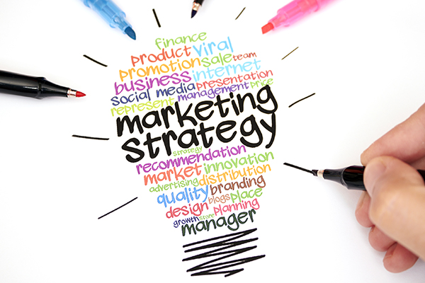
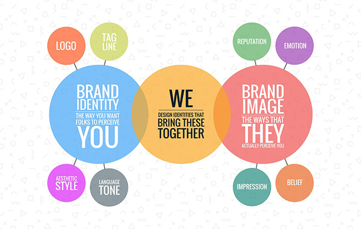
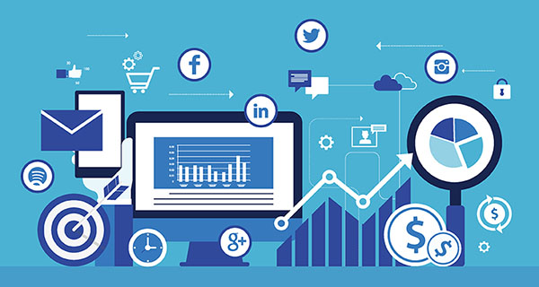

- Eric Carpenter
- Home
- Experience
- Case Studies
- Contact
Marketing is your message.

Marketing is the process of teaching consumers why they should choose your product or service over your competitors. If you are not doing that, you are not marketing. It’s that simple! The key is finding the right marketing method and defining the right marketing message to use to educate and influence your consumers.
Companies make the mistake of thinking that marketing is just “one” thing, but marketing is everything that the consumer encounters when it comes to your business, from advertising, to what they hear, to the customer service that they receive, to the follow-up care that you provide.
It’s all marketing and creating the decision within the consumer whether or not to choose you initially or for repeat business. Marketing is often confused with advertising and sales, but it is important to know the key differences.
On the first day in many Marketing 101 courses, professors often define "marketing" as "all the processes involved in getting a product or service from the manufacturer or seller to the ultimate consumer." It includes creating the product or service concept, identifying who is likely to purchase it, promoting it and moving it through the proper selling channels.
Marketing is best identified using what are called the 4 P's or a mix of marketing: Product, Price, Promotion, and Place. Starting with products, companies have many procedures they must undertake to ensure their products are ready for selling. The first stage is called the "ideation stage," where the idea for the product is conceived.
Then, marketing departments usually test new product concepts with focus groups and surveys to ascertain interest levels among potential buyers.
If the interest level is high, marketers may then sell products on a limited basis to track sales. If product sales are high, products are then rolled out on a national level.
Before products go to the market, companies must decide what styles, sizes, flavors, and scents they should sell and the packaging designs they should use. Consumers have much input in these decisions.
Price is also tested through focus groups and surveys. Companies must know the optimal price to sell their products to achieve maximum return. One way to determine price is to set it at a level comparable to competitors; that is if the company can recover all associated product expenses and still make a profit. If the company is introducing a new product that has never existed, they must determine how much the consumer is willing to pay for it. Customers will only pay so much for products. Price a product higher, and sales can drop off exponentially.
Promotion pertains to brochures, ads, and information which companies use to generate interest in their products. For more complex concepts, like spas or computers, companies may promote their wares at trade shows. Promotions usually have two purposes: generate leads for sales reps or initiate actual purchases.
Place in marketing nomenclature is the distribution. It is how and where products are sold. Consumer product companies, for example, sell to wholesalers who, in turn, sell to retailers.
In the industrial market, the buying process is longer and involves more decision makers. Some companies also sell products or services on a local level, while others sell nationally and even internationally. All distribution decisions are part of the overall marketing process.
Scource:
https://www.thebalance.com/what-is-marketing-2296057
Branding is your fingerprint.

There is a lot of confusion around branding, there are multiple definitions, so what is branding? Decades ago branding was defined as a name, slogan, sign, symbol or design, or a combination of these elements that identify products or services of a company. The brand was identified of the elements that differentiated the goods and or service from the competition.
Today brand is a bit more complex, but even more important in today’s world of marketing.
It’s the perception that a consumer has when they hear or think of your company name, service or product. That being said the word “brand” or “branding” is a moving target and evolves with the behavior of consumers, I think of it as the mental picture of who you as a company represents to consumers, it’s influenced by the elements, words, and creativity that surround it.
Branding is not only about getting your target market to select you over the competition but about getting your prospects to see you as the sole provider of a solution to their problem or need.
The objectives that a good brand will achieve include:
To succeed in branding, you must understand the needs and wants of your customers and prospects.
It is achieved by integrating your brand strategies through your company at every point of public contact. Think of branding as the expression of who you are as a company or organization and what you offer. Sound difficult? Think of it like this if a brand could speak it would say:
I am ________________.
I exist because ________________.
If you relate to who I am and why I exist you might like me, you can buy me, and you can tell others about me.
As consumers begin to identify with you, your brand will live in the hearts and minds of customers, clients, and prospects. It is the sum total of their experiences and perceptions, some of which you can influence, and some that you cannot.
A strong brand is invaluable as the battle for customers intensifies day by day. It's important to spend time investing in researching, defining, and building your brand. After all, your brand is the source of a promise to your consumer.
Your brand is a foundational piece in your marketing communication and one you do not want to be without. Branding is strategic and marketing is tactical and what you use to get your brand in front of consumers. That's why it carries a great deal of importance within a business or organization as well.
Brand serves as a guide to understanding the purpose of business objectives. It enables you to align a marketing plan with those objectives and fulfill the overarching strategy.
The effectiveness of brand doesn't just happen before the purchase, but it's also about the life of the brand of the experience it gives a consumer.
Did the product or service perform as expected? Was the quality as good as promised or better? How was the service experience? If you can get positive answers to these questions, you've created a loyal customer.
Brand not only creates loyal customers, but it creates loyal employees. Brand gives them something to believe in, something to stand behind. It helps them understand the purpose of the organization or the business.
Scource:
https://www.thebalance.com/why-is-branding-important-when-it-comes-to-your-marketing-2294845
Analytics is your data.

Analytics is an encompassing and multidimensional field that uses mathematics, statistics, predictive modeling and machine-learning techniques to find meaningful patterns and knowledge in recorded data.
Today, we add powerful computers to the mix for storing increasing amounts of data and running sophisticated software algorithms – producing the fast insights needed to make fact-based decisions. By putting the science of numbers, data and analytical discovery to work, we can find out if what we think or believe is really true. And produce answers to questions we never thought to ask. That’s the power of analytics.
From the first known population data collection project by the Swedish government in 1749, to Florence Nightingale recording and analyzing mortality data in the 1850s, to British scholar Richard Doll’s tobacco and lung cancer study in the 1950s, the analysis of data has fueled knowledge discovery for hundreds of years.
Each of the above scenarios required an answer to a heretofore unanswerable question. In the 1700s, the Swedes wanted to know the geographical distribution of their population to learn the best way to sustain an appropriate military force. Nightingale wanted to know the role that hygiene and nursing care played in mortality rates. Doll wanted to know if people who smoked were more likely to suffer from lung cancer.
Each of these pioneers knew that instinct wasn’t good enough. Analysis of data can uncover correlations and patterns. There’s less need to rely on guesses or intuition. And it can help answer the following types of questions:
With faster and more powerful computers, opportunity abounds for the use of analytics and big data. Whether it’s determining credit risk, developing new medicines, finding more efficient ways to deliver products and services, preventing fraud, uncovering cyberthreats or retaining the most valuable customers, analytics can help you understand your organization – and the world around it.
Scource:
https://www.sas.com/en_us/insights/analytics/what-is-analytics.html